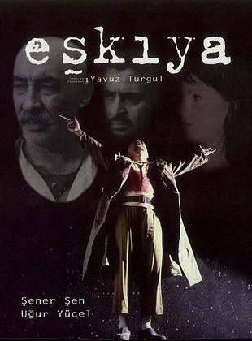

Eşkiya, hapse düşmesine neden olan arkadaşının peşine düşen bir adamın hikayesini anlatıyor. 35 yıl önce Cudi dağlarında bir grup eşkiya yakalandı ve hapse atıldı. Yıllar içinde kimi hastalıktan, kimi hesaplaşma sonucu öldü. Biri hariç... 35 yıl sonra Hapisten çıkınca Baran’ ın ilk işi köyüne dönmek olur. Yıllar önce hapse girmesine en yakın arkadaşının sebep olduğunu öğrenir. Bu en yakın arkadaşı onun çocukluk aşkını alarak İstanbul’ a gitmiştir. Baran da onu bulmak üzere İstanbul’un yolunu tutar.
Yavuz Turgul'un senaryosunu yazıp yönetmenliğini üstlendiği Türkiye sinemasının unutulmaz filmlerinden Eşkıya'nın başrollerinde Şener Şen, Uğur Yücel, Şermin Hürmeriç ve Yeşim Salkım bulunuyor.
| Yönetmen | Yavuz Turgul |
|---|---|
| Oyuncular | Şener Şen, Uğur Yücel, Şermin Hürmeriç |
| IMDb Puanı | 8.2 |